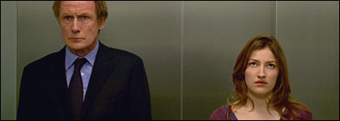

| |
|
|
9. Jänner 2006
"The Girl in the Cafe" (GB 2005)

"Love cannot change what's wrong in the world. But it's a start."
Richard Curtis entscheidet sich einen wichtigen Film lieber fürs Fernsehen zu machen, um einen garantierten weltweit gleichzeitigen Austrahlungstermin zu gewährleisten. "The Girl in the Cafe" wurde auf BBC und HBO am 25.-26.Juni und 28.Juni in den englischsprachigen Ländern und dem EU-Ostblock (HBO) ausgestrahlt, hierzulande aber nur einmal in Würzburg im Sommer. Ö-Premiere.
This funny and poignant love story by award-winning screenwriter Richard Curtis ("Love Actually", "Four Weddings and a Funeral", "Notting Hill", "Bridget Jones' Diary") stars Bill Nighy ("Love Actually", "State Of Play") and Kelly Macdonald ("Gosford Park", "Trainspotting", "State Of Play") and follows the story of a hard-working, shy civil servant, Lawrence, and his life-changing relationship with a mysterious girl whom he meets in a café opposite Downing Street.
He takes her on a romantic mini-break - to the G8 Summit. Set against the backdrop of a G8 Summit Meeting, in Reykjavik, Iceland - where Lawrence is one of the British delegation - their gentle love story develops as world leaders compete for media and political advantage. While the politicians argue, the Millennium Development Goals are sidelined.
The film follows both the growing love story between two shy outsiders and the progress of the summit, until the two become dramatically, comically and inevitably entwined.
"The Girl in the Cafe" faces perhaps the most important issue of 2005: will this be the year when world powers seriously address the issue of world poverty - once and for all? As promised in the Millenium Development Goals in the year 2000.
R: David Yates, B: Richard Curtis, D: Bill Nighy, Kelly Macdonald,
94min, eng.OF, Ö Premiere
19:30 Uhr, Space04 Kunsthaus Graz, € 5.-
Links: